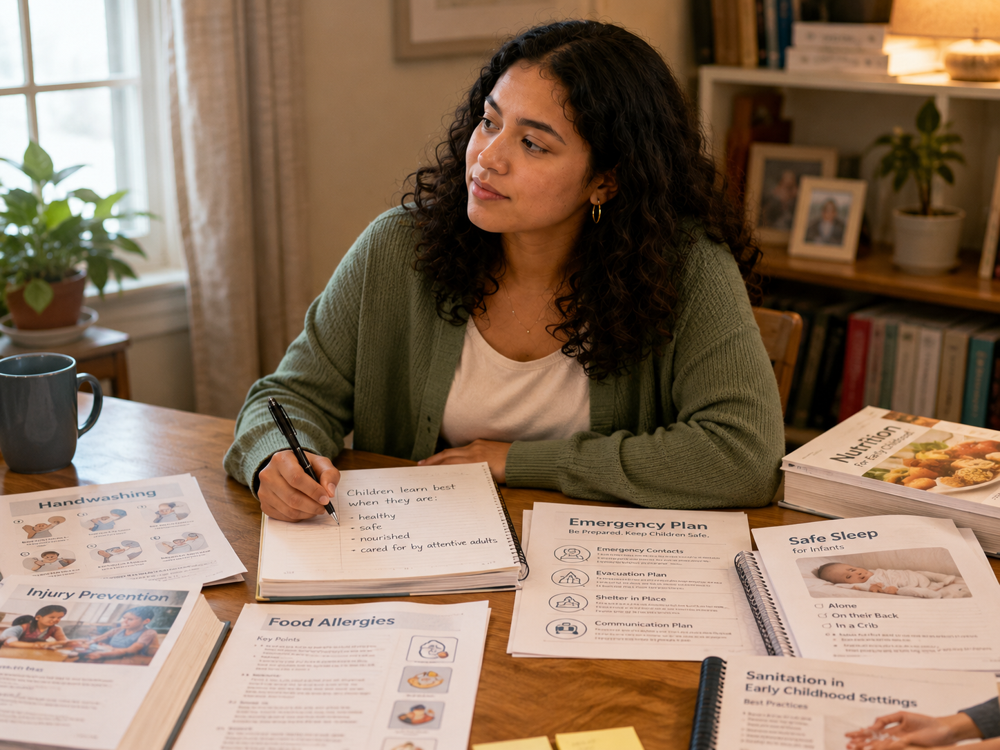

The big idea
🔎 Choose the strongest response
What does the vignette suggest about Health, Safety, and Nutrition?
Everyday responsibilities that protect and promote children’s well-being

Maya looks over the syllabus and realizes how practical this course will be: illness policies, injury prevention, handwashing, food allergies, emergency plans, safe sleep, meal planning, mandated reporting, sanitation, medication, playground safety, and children with special health needs.
She remembers seeing teachers do dozens of small things—wiping tables, checking gates, noticing a cough, reminding children to wash hands, reading food labels, documenting injuries, comforting children, and talking with families.
Those routines once seemed ordinary. Now she is beginning to understand that they are part of professional care.
The course may include serious or uncomfortable topics, but it is not only about preventing problems. Health, safety, and nutrition also help create environments where children can grow, play, eat, rest, explore, and feel protected.
What does the vignette suggest about Health, Safety, and Nutrition?
The descriptions are intentionally shuffled. Match each course theme with the best example.
Which action best illustrates prevention?
A teacher notices that a normally active child is unusually quiet and coughing. What does the vignette suggest the teacher should do first?
Which action best reflects careful nutrition-related professional care?
Why are emergency plans part of everyday professional responsibility?
Which example best illustrates responsive care?
Why does Maya conclude that “small details really matter”?
Which statement best captures the Week 1 message?
One everyday responsibility I want to become especially attentive to is…
Professional care is often made visible through ordinary routines repeated carefully and consistently.
Did your response connect the responsibility to prevention, observation, planning, communication, or responsive care?
The purpose is not only to prevent harm, but to create conditions in which children can learn, play, eat, rest, explore, and feel protected.